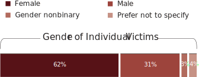
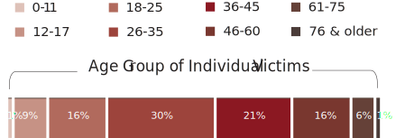
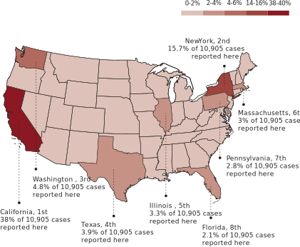
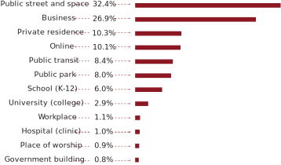
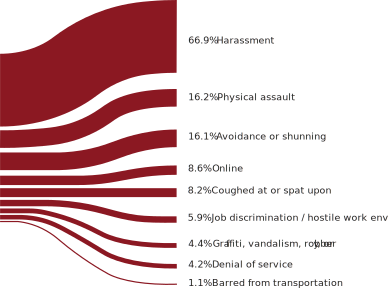
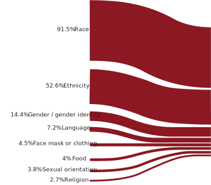

Hate crimes targeting the Asian Americans has been a big issue during the height of the pandemic. A national report released by a nonprofit alliance Stop AAPI Hate has tracked incidents of hate violence against Asian Americans and Pacific Islanders in U.S, since the beginning of the COVID-19. I was also inspired by an article published by The New York Times last April, Swelling Anti-Asian Violence: Who Is Being Attacked Where, capturing a sense of the rising tide of anti-Asian bias nationwide.
In the case, this data visualization was designed to tell a story about how anti-Asian hate violence has reached to a unprecedent level during the pandemic:
- Who were the most popular targeted Asian decsent?
- Where were they being hunted during the pandemic?
- Types of Asian Hate
- Reasons for Asian Hate
WHO WERE BEING HUNTED?
From March 19, 2020 to December 31, 2021, over 10,000 hate incidents against AAPI persons during the height of the pandemic, according to Stop AAPI Hate. Individual victims who were able to identify their race, gender and age range are categorized and displayed as below:

Among 10,905 reported cases, the victims of Chinese descent (42.8%) comprises the largest category of total reported incidents, followed by 16.1% of Korean Americans and 8.9% of Pilipinx. Also, 2% of the victims described themselves with Indian origin. Thai descent and Hmong descent were both reported with a percentage of 1.7.
Victims who identified themselves as Lao, American Indian or Alaska Native, Indonesian, Mongolian, Pacific Islander were included in the report with each percentage less than 1%.
Asian Females were Most Targeted
Asian females are always the most targeted group when it comes to hate crime. Of 10,525 cases reported by Stop AAPI Hate, 62% victims identified themselves as females. However, now even if the country is ending the mask mandates with everyone adjusting to the new normal, during the post-COVID, this ongoing Anti-Asian sentiment never seems to end.

* N = 10,525 (including n=373 answered “Prefered Not To Specify”)
One year after the Atlanta spa shootings with six Asian descent women being killed, early January this year, another Asian woman was fatally pushed in front of an oncoming train at Times Square Station in New York City. A month later, Christina Yuna Lee, a Korean-American woman who lived in Chinatown neighborhood, was stabbed to death after a man followed her into her apartment. In this March, a 67-year-old woman of Asian descent was punched 125 times by a man in Yonkers, New York.
A Spotlight on Young Asian Adults
Not only did AAPI women become easy prey to hate crime, a spotlight was also thrown on the young Asian adults. The report shows AAPI people aged between 26 and 35 years old were with the highest percentage (30%) out of 9,740 reported cases, followed by 36-45 age group with 21%.

* N = 9,740.
WHERE WERE THE VICTIMS?
The statistics also shows hate crime cases were reported in various states across the United States. The map below has displayed TOP 20 states with largest number of Asian-Hate incidents, along with the most popular locations where AAPI people were being hunted.

* N = 10,905.
* Note: The map doesn't include the state of Hawaii and the state of Alaska where no cases are reported during the COVID.
California, along with New York City were the two states that were hit hardest by Asian hate violence during the height of the pandemic. 38% of the cases happened in California which made it rank first among 20 states, followed by New York City's 15.7% being as the state with second largest numbers of Asian-Hate incidents.
More specifically, in public spaces, higher percentages of Asian-hate incidents occurred mostly on public streets (32.4%) and then at business place (26.9%). Online, public transit, public park, school areas,etc. were also mentioned here.

* N = 10,905.
* Note: Individuals who reported could select more than one reason for discrimination; thus the percentages do not add up to 100%.
TYPES OF ASIAN HATE
Any act of violence that intends to endanger either physical or psychological health against AAPI people can be considered as Asian Discrimination.
According to Stop AAPI Hate, 66.9% of individual victims described HARASSMENT as the major types of Asian Hate, including verbal (e.g.hate speech), behavioral (e.g.stalking/bullying), printed (e.g hate letters/propaganda/signage) and sexual related harassment acts.
16.2% of the cases identified PHYSICAL ASSAULT as the major type, including physical attack and physical threat or intimidation with objects.

* N = 10,905.
* Note: Individuals who reported could select more than one reason for discrimination; thus the percentages do not add up to 100%.
REASONS FOR ASIAN HATE
91.5% of hate incidents occurred due to RACE issue, followed by 52.6% of ethnicity motivated. Reasons behind anti-Asian hate cases were categorized in below eight motivations:

* N = 10,905.
* Note: Individuals who reported could select more than one reason for discrimination; thus the percentages do not add up to 100%.